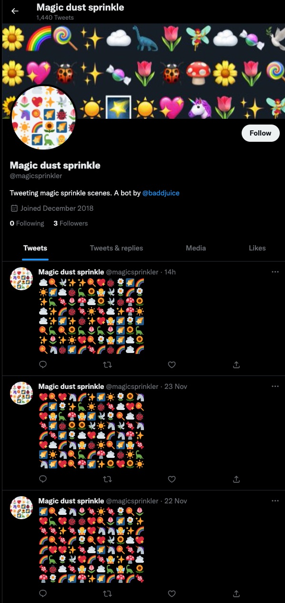

Magic Sprinkler
A little bit of magic sprinkled to your feed.
Based on tiny woodland
Created as I was learning about twitter bots.
It would tweet a random magic sprinkle every day.
This bot is no longer active.

Olivia Baddeley
Developer
A little bit of magic sprinkled to your feed.
Based on tiny woodland
Created as I was learning about twitter bots.
It would tweet a random magic sprinkle every day.
This bot is no longer active.
